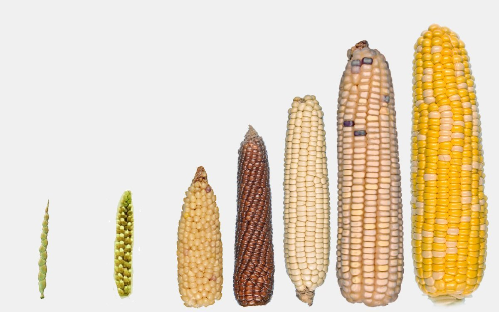
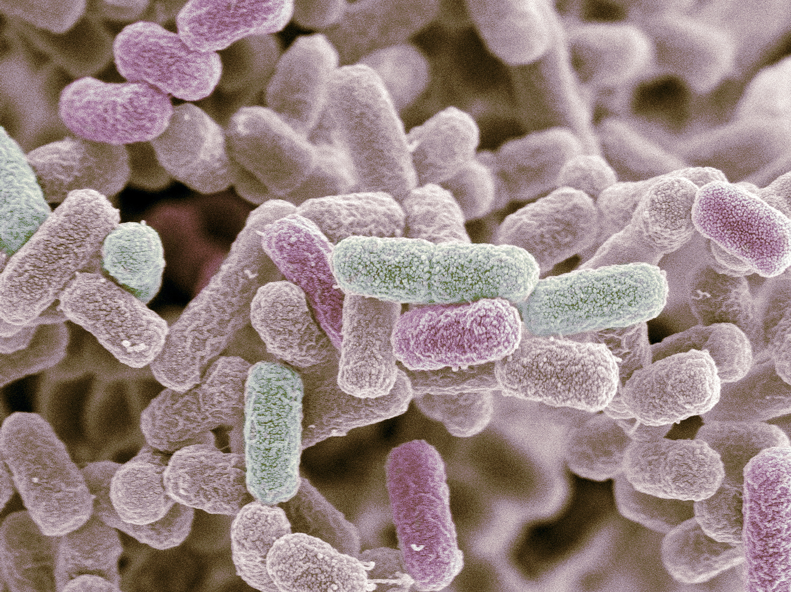
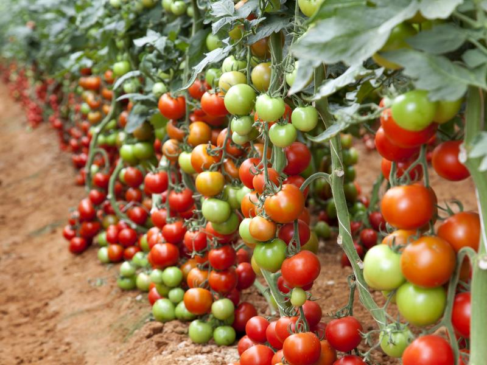

Um dos tópicos mais controversos da genética atualmente são os transgênicos; um organismo que teve seu DNA modificado. Estudos da área são recentes e escassos, abrindo margem para desinformação e opiniões acirradas.
Existem dezenas de aplicações para a engenharia genética; é um interesse comum da indústria alimentícia e da saúde pública. Porém, o foco deste artigo será os impactos à saúde de alimentos transgênicos e as possibilidades para o futuro.
História da Engenharia Genética
Imagine o seguinte cenário: um fazendeiro percebe que parte da sua plantação deu muito mais grãos que o restante. No ano seguinte, ele separa essas sementes e planta em todo o campo, aos poucos selecionando a população com determinada característica genética. Esse processo se chama reprodução selecionada, e é uma técnica conhecida há milhares de anos.
Um exemplo comum da reprodução selecionada é o milho; no eu estado selvagem, o milho forma uma espiga fina e pequena, semelhante ao trigo. Os grãos eram duros e difíceis de tirar do sabugo. Mas ao longo das colheitas, características mais desejáveis se tornaram mais comuns: a espiga cresceu, aumentou a quantidade de grãos e o sabor ficou mais doce.
Engenharia genética é uma ferramenta recente, com pesquisas a partir dos anos 70. Em 1974, o cientista Rudolf Jaenisch criou o primeiro rato geneticamente modificado utilizando engenharia genética. Nos anos 80, mais experimentos foram realizados, resultando em espécimes que passam os genes modificados para as próximas gerações.
Aplicando a engenharia genética em problemas reais, podemos tornar diversos insumos mais acessíveis ao público ou até mesmo resolver problemas como pestes e doenças infecciosas. Por exemplo, até meados dos anos 70, insulina - o hormônio para o tratamento de diabetes - era extraída de animais, e causava reações alérgicas em humanos. Porém, a partir de 78, a indústria vem produzindo insulina artificial por meio de bactérias E. coli geneticamente modificadas.
Aplicações em Alimentos
A aplicação mais popular de transgênicos atualmente é na indústria alimentícia. Vemos notícias sobre como plantas geneticamente modificadas foram criadas para crescer mais rápido, ou como uma raça de animal foi criada para engordar mais. Mas acho que isso não leva em conta todas as oportunidades que existem com essa tecnologia.
A engenharia genética pode ser usada para criar plantas que resistem a pragas. Atualmente, a maioria do setor agrícola lida com isso usando pesticidas ou agrotóxicos; isso deixa resíduos nas plantas, contamina a biosfera e afeta a saúde dos trabalhadores rurais. Com uma espécie modificada, é possível tornar a planta tóxica contra pestes.
E a melhor parte - e a que causa mais polêmica - isso não afeta a saúde humana! As alterações desenvolvidas têm como alvo o sistema de insetos, sendo inofensivas a nós, humanos. Isso acontece do mesmo jeito que cachorros são alérgicos a chocolate, enquanto para nós é um alimento comum.
Desenvolvimento Sustentável
Pensando mais a fundo, existem muito mais aplicações para transgênicos que ajudam a preservar o planeta. Por exemplo, árvores da espécie Castanha dentata, nativa dos Estados Unidos, são capazes de coletar CO2 da atmosfera muito mais rápido que outras plantas. Imagine, então, selecionar genes específicos dessa árvore para que sejam essas propriedades sejam replicadas em várias outras espécies.
Transgênicos não são ficção científica, mas sim uma solução real para lidar com o efeito estufa, produzir insumos, cuidar da nossa saúde e até controlar doenças. Por isso a pesquisa científica é tão importante; quanto mais rápido ela se desenvolver, mais cedo poderemos aplicar engenharia genética em problemas reais.
Para mais informações, segue as referências de pesquisa do artigo, com crédito especial à excelente série de vídeos do canal Kurzgesagt sobre engenharia genética e sua aplicação em diversas áreas.